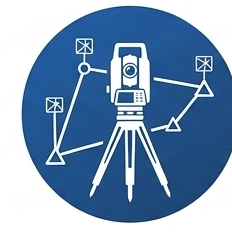

Aplikacija za izravnanje geodetskih mreža — radi offline u pregledniku.

Izravnanje poligonskog vlaka (umetnuti, zatvoreni, slijepi)i računanje koordinata detaljnih tačaka.
Izravnanje nivelmanskog vlaka (umetnuti, zatvoreni, slijepi)i računanje nadmorskih visina — obrasci N.O.1, N.O.2 i N.O.3.